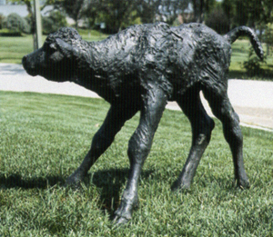

Pigs
The figure 'Auguste', cast in bronze in 1993.

A bronze table made in 1992, called 'Rendezvous'.

A bronze from 1988 called 'Princess Louise'.

Another bronze sculpture, cast in 1981 and called 'My Picasso'.

A bronze sculpture of T C Douglas, done in 1982.

A bronze sculpture of Potter the bull, done in 1990.

The bronze mate of Potter, Valadon, was done in 1990.

The bronze calf, Teevo, was done in 1993.

This massive sculpture is placed on the University of Regina campus and the image was taken in HDR by Julian Bartel.